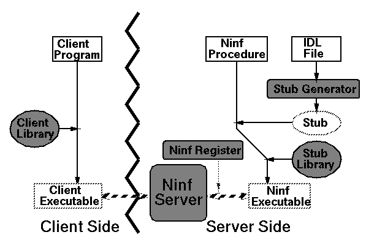

<!DOCTYPE HTML PUBLIC "-//W3O//DTD W3 HTML 2.0//EN">
<!Converted with LaTeX2HTML 95.1 (Fri Jan 20 1995) by Nikos Drakos (nikos@cbl.leeds.ac.uk), CBLU, University of Leeds >
<!Actually with its Japanized version JLaTeX2HTML 95 (Wed Mar 1 1995) by Masahiro Kitagawa (kitagawa@ee.es.osaka-u.ac.jp), Osaka University >
<HEAD>
<TITLE> Ninf RPC  $B%7%9%F%`$N9=@.(B</TITLE>
</HEAD>
<BODY>
<meta name="description" value=" Ninf RPC  $B%7%9%F%`$N9=@.(B">
<meta name="keywords" value="main">
<meta name="resource-type" value="document">
<meta name="distribution" value="global">
<P>
 <BR> <HR><A NAME=tex2html80 HREF="node6.html"></A>   <A NAME=tex2html78 HREF="node2.html"></A>   <A NAME=tex2html74 HREF="node4.html"></A>         <BR>
<B> Next:</B> <A NAME=tex2html81 HREF="node6.html"> Ninf Server</A>
<B>Up:</B> <A NAME=tex2html79 HREF="node2.html"> Ninf RPC  $B$N@_7W(B</A>
<B> Previous:</B> <A NAME=tex2html75 HREF="node4.html"> Ninf RPC   $B$N35MW(B</A>
<BR> <HR> <P>
<H2><A NAME=SECTION00023000000000000000> Ninf RPC  $B%7%9%F%`$N9=@.(B</A></H2>
<P>
Ninf RPC  $B%7%9%F%`$O!"0J2<$NMWAG$+$i9=@.$5$l$k!#(B
<UL><LI> <b> Ninf Server</b><BR> 
$B%/%i%$%"%s%H$+$i$N%j%/%(%9%H$r<u$1$H$k$H!"(B
$B<B:]$K7W;;$r9T$J$&(BNinf Executable  $B$r5/F0$7!"(B
$B$=$N8e$N(BNinf Executable  $B$H%/%i%$%"%s%H$N(B
$BDL?.$rCf7Q$9$k!#(B
<P>
<LI> <b> Ninf Client Library</b><BR> 
$B%/%i%$%"%s%H%W%m%0%i%`$H%j%s%/$9$k%i%$%V%i%j!#(B
<code>Ninf_call(</code> <i> funcname,  arg, </i><code>)</code>
<P>
$B$r<B8=$9$k!#(B
<P>
<LI> <b> Ninf Stub Generator</b><BR> 
Ninf IDL $B$K$h$C$F5-=R$5$l$?Dj5A%U%!%$%k$+$i!"(B
$B%9%?%V(B  $B$H(B make file$B$r:n@.$9$k!#(B
<P>
<LI> <b> Ninf Stub Library</b><BR> 
$B%9%?%V(B  $B$,(BNinf $B%5!<%P$d%/%i%$%"%s%H$HDL?.$9$k$N$KI,MW$J%k!<%A%s$rDs6!$9$k!#(B
<P>
<LI> <b> Ninf Register</b><BR> 
Ninf $B%5!<%P$K(BNinf$B2=$7$?%W%m%0%i%`$rEPO?$9$k!#(B
Ninf$B2=$7$?%W%m%0%i%`$r0J2<$G$O(BNinf Executable  $B!"(BNinf$B2=$5$l$k%k!<%A%s$r(B
Ninf Procedure  $B$H8F$V!#(B
<P>
</UL>
<P>
$B?^(B<A HREF="node5.html#ninf_construction">2</A>$B$K!"(BNinf RPC  $B$N9=@.$r<($9!#(B
$B0J9_$G$=$l$>$l$NMWAG$K4X$7$F>\$7$/8+$k!#(B
<P>
<P><A NAME=171>&#160;</A><A NAME=ninf_construction>&#160;</A>
<BR><STRONG>$B?^(B 2:</STRONG> Ninf RPC   $B$N9=@.(B<BR>
<P><BR> <HR>
<P><ADDRESS>
<I>Hidemoto Nakada <BR>
Wed Dec 20 05:42:46 JST 1995</I>
</ADDRESS>
</BODY>
